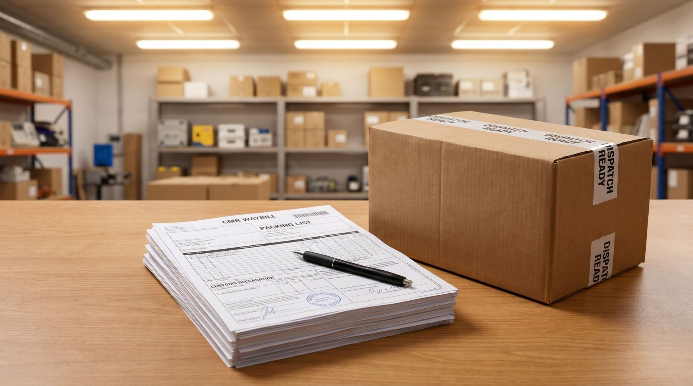

Kunden ringer. Kassen var mast i det ene hjørne, og vasen indeni er i stykker.
Du siger, at hun må tage den med fragtmanden. Det kan hun ikke. Hun har ingen aftale med ham, du har. Det er dig der hæfter over for hende, og det er også dig der skal anmelde skaden. Og det du får i erstatning, er sjældent det du lige har betalt hende.
Hver femte danske netbutik peger på fragtskader og fragtselskabernes vilkår i den forbindelse som en af de største udfordringer på logistikområdet. Andelen er 21 procent i både 2024 og 2025, mod 15 procent i 2023.
Kilde: Dansk Erhverv, Logistikanalyse 2025. Webanalyse blandt danske netbutikker og omnichannel-virksomheder, gennemført 20. november til 10. december 2025.
Først det ubøjelige: du hæfter over for kunden
Indtil varen er fremme hos forbrugeren, er den din risiko. Går den i stykker undervejs, har kunden krav på en hel vare eller pengene tilbage, og hun skal ikke først bevise noget over for et fragtfirma hun ikke har handlet med.
Både PostNord og GLS skriver det selv: det er afsenderen der opretter reklamationen. Transportøren er ansvarlig over for dig, og du er ansvarlig over for din kunde.
Det betyder i praksis, at du betaler først og søger erstatning bagefter. De to beløb er ikke det samme.
Erstatningen følger vægten, ikke værdien
Det er her de fleste får en overraskelse. Efter Nordisk Speditørforbunds almindelige bestemmelser, som er standarden bag størstedelen af dansk godstransport, er erstatningen loftet af godsets bruttovægt.
Grænsen er 8,33 SDR pr. kilo. SDR er en regneenhed fra Den Internationale Valutafond, og kursen svinger. Med en kurs omkring 8,87 kr. lander loftet på cirka 74 kr. pr. kilo.
Regn det igennem på en rigtig ordre:
- En vase til 3.000 kr., pakket i en kasse der vejer 2 kg i alt
- Loft: 2 × 74 kr. = cirka 148 kr.
- Du har allerede sendt kunden en ny vase eller pengene tilbage
Jo lettere og dyrere varen er, jo dårligere står du. Elektronik, smykker og kosmetik er de værste. Havemøbler og foder er de bedste, fordi de vejer noget.
👉 Vil du vide hvor jeres skader opstår? Tal med SmartPack →
To ting mere, der trækker beløbet ned
Det er fakturaværdien, ikke det kunden betalte. Erstatningen regnes ud fra varens værdi da den blev overtaget til transport, altså typisk din indkøbspris. Ikke din udsalgspris.
Din avance er ikke dækket. Bestemmelserne siger det lige ud: der ydes ingen erstatning for tabt avance, mistet markedsandel eller andet tab. Fragten og eventuel told får du med, men fortjenesten på salget er tabt.
Fire ting der får erstatningen til at falde helt bort
Der er en liste over forhold, hvor transportøren slet ikke er ansvarlig. Fire af dem rammer webshops direkte:
- Manglende eller mangelfuld emballage. Kunne kassen ikke holde til almindelig håndtering, er skaden din.
- Fejlagtig eller ufuldstændig mærkning. Står der ikke skrøbeligt, eller peger pilene forkert, er det svært at bebrejde chaufføren.
- Varens egen letskadelige beskaffenhed. Brækage, lækage, følsomhed over for kulde, varme eller fugt.
- Lastning og stuvning I selv har lavet. Relevant ved paller og større forsendelser.
Emballagen er den eneste af de fire, I styrer hundrede procent. Det er også den, der oftest afgør sagen.
Fristerne er kortere end de fleste tror
Det her er den anden store fejlkilde. Ikke at folk ikke anmelder, men at de anmelder for sent.
- Synlig skade: der skal reklameres straks ved modtagelsen
- Skjult skade: senest syv kalenderdage efter levering
- GLS skriver selv fem hverdage på deres privatpakker
- Sagsanlæg skal ske inden et år, ellers er kravet fortabt
Og konsekvensen af at komme for sent er ikke bare et afslag. Reklamerer du ikke i tide, vender bevisbyrden. Så er det dig der skal bevise, at skaden opstod mens transportøren havde varen. Det kan man som regel ikke.
Hvad kunden skal gøre, før hun rydder op
De første fem minutter hos kunden afgør, om du får en krone. GLS' egen liste er repræsentativ for hvad transportørerne kræver:
- Tag ikke varen i brug
- Gem al emballage, både den udvendige kasse og den indvendige beskyttelse
- Flyt ikke pakken fra leveringsadressen
- Tag billeder af alle kassens udvendige flader, med fragtlabelen synlig på mindst ét af dem
- Tag billeder af den indvendige beskyttelse og af selve skaden
- Hav dokumentation for varens værdi klar
Problemet er, at ingen kunde ved det. Hun pakker ud, smider kassen i genbrugscontaineren og ringer til jer to dage senere. Så er sagen tabt, uanset hvor meget ret I har.
Løsningen er kedelig, men den virker: skriv de seks punkter ind i den mail kundeservice sender ud, den dag en kunde melder en skade. Ikke i en manual, men i selve svaret.
Skal I overhovedet anmelde?
Det er et regnestykke, ikke et princip. En anmeldelse koster tid: dokumentation, korrespondance, opfølgning. Ved en to kilos pakke er loftet omkring 148 kr.
Bruger kundeservice en halv time på sagen, har I brugt godt 100 kr. i løn for at hente 148 hjem. Der er en grænse, hvor det ikke kan betale sig.
Men det betyder ikke, at I skal lade være med at registrere skaden. Den enkelte sag er lille. Mønsteret er ikke.
Det der faktisk flytter noget
Når loftet er lavt og fristerne er korte, ligger gevinsten ikke i at vinde flere sager. Den ligger i at få færre.
- Emballagen. Den eneste post I styrer selv, og den der oftest afgør ansvaret. En kasse der passer til varen med det rigtige fyld, er billigere end én tabt sag.
- Registrer hver skade på ordren. Vare, transportør, kassetype, dato.
- Se efter mønsteret. Er det altid den samme vare? Den samme transportør? Den samme rute eller den samme uge?
Uden de data er en samtale med transportøren en fornemmelse. Med dem er den en forhandling.
Hvad SmartPack gør ved det
- Vægt og mål ligger på varen, så systemet kan anbefale kassestørrelse ud fra hvad der faktisk er i ordren. Mindre luft betyder mindre bevægelse under transport
- En note kan lægges på et enkelt produkt, så pakkeren får besked om at netop den vare skal have ekstra beskyttelse
- Skaden kan registreres på ordren, så I bagefter kan trække listen ud og se om det er varen, kassen eller transportøren der går igen
Det fjerner ikke skaderne. Det flytter dem fra at være enkeltsager, I taber én ad gangen, til at være et tal I kan gøre noget ved.